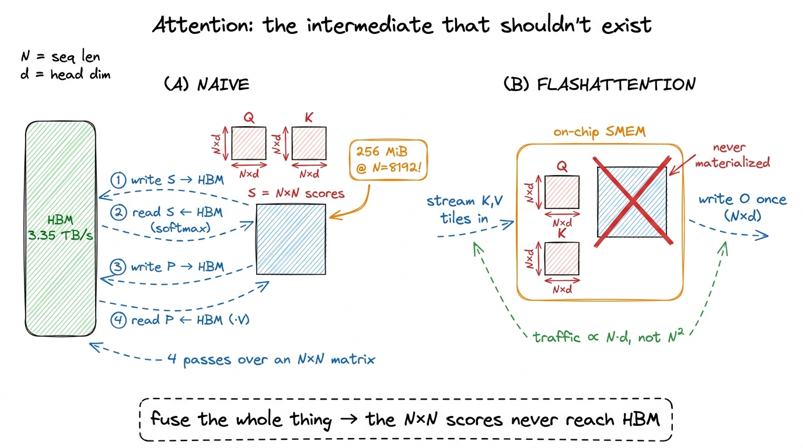
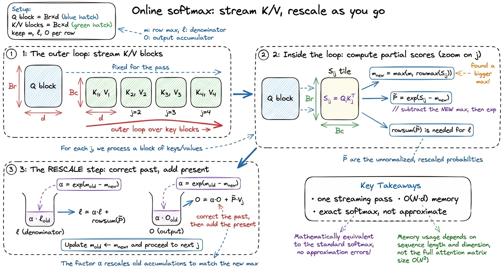
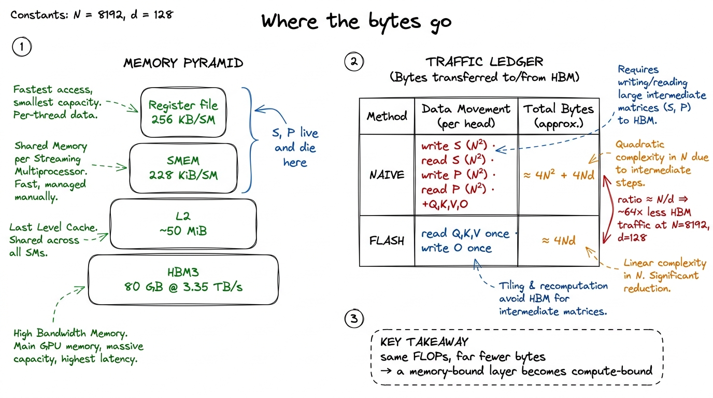
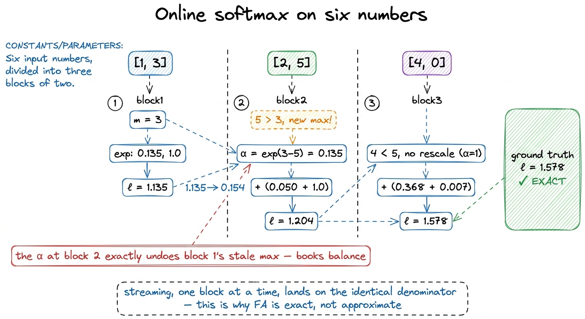
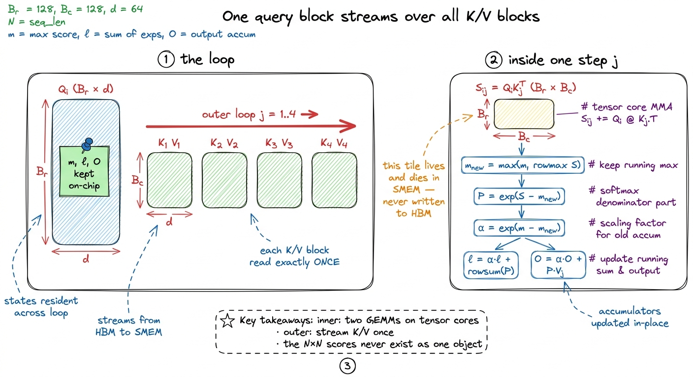
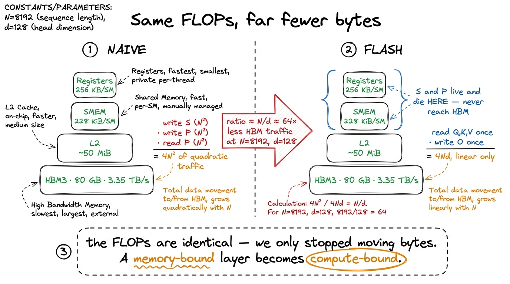

FlashAttention I: tiling attention FA
Let me start where the confusion starts. Ask ten engineers why attention is slow and nine will say "it's the matrix multiplies — attention is O(N²) work, and that quadratic cost is what kills you at long context." Half of that sentence is right and the important half is wrong. Attention really is quadratic. But the quadratic thing that hurts is not the arithmetic — it's the memory. The naive way to run attention writes down an N × N matrix of scores, parks it in main memory, and then reads it back twice. That matrix is the villain of this whole article. FlashAttention is, in one line, the trick that computes the exact same answer without ever writing that matrix down.
So here is the question this article answers, stated plainly: how do you compute attention when the intermediate you'd normally store is too big and too slow to store — and get bit-for-bit the same result anyway? I'm going to build the answer from scratch. You do not need to have read anything else on this site to follow it, though if you want the memory-vs-compute intuition drawn out slowly first, operator fusion and the three regimes are the warm-up. This is the first of two articles on FlashAttention. This one earns the idea with a by-hand example; the next one turns it into a real Hopper kernel with wgmma and TMA.
What attention is, from zero
Let me set up the object we're optimizing so nobody gets left behind. Attention takes three matrices — queries Q, keys K, and values V. Each has shape N × d, where N is the sequence length (how many tokens) and d is the head dimension (how wide each token's vector is, typically 64 or 128). For one attention head, the whole operation is three steps:
S = Q @ K.T # (N, N) every query dotted with every key
P = softmax(S, dim=-1) # (N, N) turn each row into a probability distribution
O = P @ V # (N, d) each output is a weighted average of valuesRead it as a lookup. Row i of S holds the similarity between query i and every key. Softmax turns that row of raw similarities into weights that sum to 1. Then row i of O is those weights applied to the value vectors — a soft, learned average. That's it. That's attention.1 The full formula has a / √d scale inside the softmax and, for language models, a causal mask that zeroes out the upper triangle so a token can't attend to the future. Both are easy to fold into the kernel we build and I'll leave them out of the arithmetic to keep the numbers clean. Naive attention writes them out in full.
Notice the shapes. Q, K, V, and the output O are all N × d — they grow linearly with sequence length. But S and P are N × N — they grow quadratically. Hold onto that asymmetry. It is the entire story.
Let me put one number on it before we go further. Take N = 8192 and d = 128, a realistic long-context setting. Then Q, K, V, O are each 8192 × 128 ≈ 1M elements. But S is 8192 × 8192 ≈ 67M elements — in FP32 that's 256 MiB. Per head. Per layer. A big model has dozens of heads and dozens of layers. That one intermediate is roughly 64× larger than any of the inputs, and we're about to see we shove it across memory not once but four times.

figure rendering · The whole tension in one picture: Q, K, V, O grow with N, but the scorWhy the naive version is a memory disaster
Now let's count the traffic, because counting bytes is how you diagnose every GPU performance problem. A GPU has two resources that matter here. It has arithmetic units that do multiplies and adds astonishingly fast — an H100 hits 989 TFLOP/s on FP16 tensor cores. And it has a pipe to its main memory, HBM, that moves bytes much more slowly — about 3.35 TB/s on an H100. Those two numbers are wildly out of balance. The compute is roughly 300× faster than the memory can feed it. So any operation that moves a lot of bytes while doing little math will spend all its time waiting on that pipe, and the fast arithmetic units sit idle.2 This is Horace He's factory analogy from "Making Deep Learning Go Brrrr": the arithmetic units are a huge, fast factory floor, and HBM bandwidth is the supply chain feeding it. Doubling the factory does nothing if the trucks can't keep up. Normalization and pointwise ops do a tiny fraction of a network's FLOPs yet can dominate its runtime for exactly this reason.
Which resource does naive attention lean on? Let's trace every trip to HBM.
- Compute
S = Q @ Kᵀ. This is a real matmul — fine on its own. But then we write all ofSto HBM. That'sN²elements out. - To softmax, we read all of
Sback to find each row's max and sum.N²in. - We write
Pback to HBM.N²out. - To compute
O = P @ V, we readPa third time.N²in.
Four passes over an N × N matrix, and the arithmetic in the middle — the softmax — is almost nothing. Softmax does one exponential and a couple of adds per element. So steps 1–4 are a memory-bound sandwich: two compute-bound GEMMs on the outside, and in the middle three or four full round-trips of a quarter-gigabyte matrix that exist only to feed a handful of exponentials.
Let me tally it. The linear traffic — reading Q, K, V and writing O — is about 4 · N · d elements. The quadratic traffic — the score-matrix round-trips — is about 4 · N². At N = 8192, d = 128, the ratio of quadratic to linear traffic is 4N² / 4Nd = N/d = 8192/128 = 64. The score matrix accounts for ~64× more HBM traffic than the actual inputs and outputs combined. We are drowning a memory-bound layer in a matrix that never needed to persist.

figure rendering · The villain, drawn. The scores get written and read four times, and thThis is textbook operator fusion territory. Horace He's rule: "instead of writing our data to global memory just to read it again, we elide the extra memory accesses by performing several computations at once." The score matrix S and the weight matrix P are exactly the kind of intermediates we should never have written. If we could compute the two GEMMs and the softmax in one fused pass, keeping S on-chip and never letting it reach HBM, the quadratic traffic would vanish and only the linear Q,K,V,O traffic would remain.
So that's the plan. And the moment you state it, you hit the wall that stopped everyone for years.
The obstacle: softmax wants the whole row at once
Here's the natural question. If fusion is so obviously good, why didn't every framework do it from day one? Because softmax is global along a row, and that seems to make streaming impossible. Let me show you exactly why.
Numerically-stable softmax of a row x is a three-step recipe:
m = max(x) # 1. the row's maximum
p = exp(x - m) # 2. subtract max, then exponentiate
out = p / sum(p) # 3. divide by the sum of exponentialsWe subtract the max before exponentiating so nothing overflows — exp of a large logit blows up to inf in FP32 the moment the input crosses ~88.7.3 Subtracting the row max is mathematically free — softmax(x) = softmax(x − c) for any constant c — but numerically essential. This is the same stability trick built up carefully in softmax from scratch, where the same online recurrence appears first for plain softmax before it ever meets attention. The problem: both m (the max) and sum(p) (the denominator) depend on every column in the row. You cannot divide by a sum you haven't finished computing. You cannot subtract a max you haven't finished finding.
So the obvious fused loop — "stream in one block of keys, immediately compute its scores, immediately use them" — looks doomed. You get partway across the row, you have some scores, but you can't normalize them yet because a bigger score might still be waiting in a block you haven't loaded. It feels like you're forced to see the whole row before you can commit to anything. And seeing the whole row means materializing the whole row. Which is the exact thing we're trying to avoid.
The way out is one of my favorite tricks in all of systems, and it has a name: online softmax.
The mental model: a running mean that corrects itself
Before the algebra, let me give you the picture to hang everything on, because we'll reuse it the rest of the way.
Think about computing the average of a stream of numbers you can only see one at a time, and you're not allowed to store them. You keep a running average and a running count, and each new number nudges the average. You never needed all the numbers at once — you kept a small summary and updated it. That's online computation: carry partial statistics, correct them as new data arrives.
Online softmax is the same idea, but with a twist that makes it beautiful. As we walk across the key blocks for a fixed set of query rows, we keep three running quantities per query row:
m— the running max seen so far,ℓ— the running sum ofexp(score − m)so far,O— the running weighted-value accumulator so far (ad-vector per query row).
Here's the twist. With a running average, old contributions stay valid. With softmax, they don't — because everything was computed relative to m, and m can change. When a new key block arrives carrying a score bigger than our current m, every exponential we've already summed was computed against a stale, too-small max. Those old terms are now too large, each by exactly the factor exp(m_old − m_new). So we don't throw them away and we don't recompute them. We rescale them: multiply the old ℓ and the old O by that correction factor, and they're instantly consistent with the new max. Then we fold in the new block.
That single rescale is the whole invention. It lets the softmax denominator and the output accumulator march forward one block at a time, without ever holding the full row.4 Online softmax predates FlashAttention — it's from Milakov & Gimelshein's 2018 "Online normalizer calculation for softmax." FlashAttention's own contribution was noticing you can carry the output accumulator O through the same recurrence, which fuses the second GEMM (P @ V) into the streaming pass too. Softmax alone was known; fusing the second matmul into it was the leap.

figure rendering · The one idea to remember. Online softmax is a running statistic that rDoing it by hand, on six numbers
I don't want you to take the rescale on faith, so let's grind it out on a row of six scores, split into three blocks of two, and check that online softmax gives exactly the same answer as the textbook version. This tiny example is the anchor — everything scales up from here.
Say one query row produces these six raw scores against six keys:
row = [1, 3, 2, 5, 4, 0]
block1 block2 block3The ground truth, computed the normal way. The max is 5. Subtract it: [-4, -2, -3, 0, -1, -5]. Exponentiate: [0.0183, 0.1353, 0.0498, 1.0, 0.3679, 0.0067]. The sum is ℓ = 1.578. So the softmax weights are each of those divided by 1.578.
Now online, block by block, and watch the rescale earn its keep.
Block 1 = [1, 3]. No history yet. m = 3. Exponentiate against 3: exp(1−3)=0.1353, exp(3−3)=1.0. Running sum ℓ = 1.1353.
Block 2 = [2, 5]. Its local max is 5, which beats our current m = 3. So m_new = 5. Rescale first: α = exp(m_old − m_new) = exp(3 − 5) = exp(−2) = 0.1353. Our old sum was measured against max 3, so shrink it: ℓ ← 0.1353 × 1.1353 = 0.1537. Now fold in block 2 against the new max: exp(2−5)=0.0498, exp(5−5)=1.0, adding 1.0498. So ℓ = 0.1537 + 1.0498 = 1.2035.
Block 3 = [4, 0]. Local max 4, which does not beat m = 5. So m stays 5, α = exp(5−5) = 1 (no rescale needed). Fold in: exp(4−5)=0.3679, exp(0−5)=0.0067, adding 0.3746. So ℓ = 1.2035 + 0.3746 = 1.578.
That final ℓ = 1.578 is exactly the ground-truth denominator. Not approximately — exactly, up to floating-point rounding. The rescale factor α = 0.1353 at block 2 is precisely what compensated for the fact that block 1 was originally exponentiated against the wrong (too-small) max. The past got corrected, then the present got added, and the books balanced. The output accumulator O follows the identical recurrence — every time we shrink ℓ, we shrink O by the same α, so O also lands exactly on the true weighted sum of values.5 "Exactly" carries one honest asterisk: FlashAttention is exact in real arithmetic, but on hardware it accumulates in a different order than the naive version, so the last bit or two can differ. That's ordinary floating-point non-associativity, the same thing you'd see reordering any sum — not an approximation and not a bug. It's why FA outputs match reference attention to a small tolerance, not bit-for-bit.

figure rendering · Grinding the recurrence by hand. The rescale at block 2 corrects blockIf that example clicked, you understand FlashAttention. Everything left is turning this row-at-a-time recurrence into a block-at-a-time kernel that a GPU can actually run fast.
The fused kernel, as a sketch
Now we lift the by-hand version to matrices and tiles. Instead of one query row, one thread block owns a block of B_r query rows, keeps its statistics on-chip for the whole computation, loops over blocks of K/V, and writes the final output only once. Here it is in concept-first form:
# One CTA (thread block) owns query block Q_i (B_r x d), resident in SMEM/registers.
# m: (B_r,) running max, init -inf
# l: (B_r,) running sum, init 0
# O: (B_r, d) accumulator, init 0
m = full(B_r, -inf); l = zeros(B_r); O = zeros(B_r, d)
for j in range(num_k_blocks): # outer loop: stream over K/V blocks
K_j = load(K, j) # (B_c, d) -> SMEM (streamed in)
V_j = load(V, j) # (B_c, d) -> SMEM
S = Q_i @ K_j.T # (B_r, B_c) scores — live in SMEM/regs, never HBM
m_new = maximum(m, rowmax(S)) # (B_r,) updated running max
P = exp(S - m_new[:, None]) # (B_r, B_c) unnormalized weights
alpha = exp(m - m_new) # (B_r,) the rescale factor from our by-hand example
l = alpha * l + rowsum(P) # rescale old sum, then add this block
O = alpha[:, None] * O + P @ V_j # rescale old output, then add this block's P·V
m = m_new
O = O / l[:, None] # ONE normalize, at the very end
store(O_i, O) # (B_r, d) -> HBM (the only write!)Read what did not happen. S is B_r × B_c — a small shared-memory tile sized to fit on-chip, never the full N × N — and it's consumed the instant it's produced. P is equally ephemeral. The division by the denominator is deferred to a single line at the very end, because until the last key block we don't know the true ℓ. The alpha line is the only thing here that would look strange to someone who's written an ordinary softmax, and it's exactly the α = exp(m_old − m_new) we computed by hand. Same recurrence, now vectorized over B_r rows and folding in a whole B_c-wide block at a time.
Two loops are worth naming out loud. The inner work — the two GEMMs Q_i @ K_jᵀ and P @ V_j — runs on the tensor cores and is the real arithmetic. The outer loop over j streams K/V blocks through shared memory. Because we hold m, ℓ, O resident and only touch each K/V block once, the outer loop reads K and V exactly once each across the whole computation. That's the linear traffic and nothing more.

figure rendering · The kernel shape. A resident query block sweeps across streamed K/V blSizing the tiles: a shared-memory budget
How big can B_r and B_c be? This is the same shared-memory budget problem as the SMEM tiling step in the GEMM ladder — you're packing tiles into a fixed on-chip scratchpad. An H100 gives you up to 228 KiB of usable shared memory (SMEM) per Streaming Multiprocessor (SM). Everything live at once has to fit: the query block Q_i (B_r × d), the current K_j and V_j (B_c × d each), and the score tile S (B_r × B_c) — plus headroom to double-buffer the next K/V block so its load overlaps this block's math.
Let's do the arithmetic. With d = 128, FP16 (2 bytes), and a natural choice B_r = B_c = 64: Q_i is 64 × 128 × 2 = 16 KiB; K_j and V_j are 16 KiB each; the score tile S is 64 × 64 × 2 = 8 KiB. That's 16 + 16 + 16 + 8 = 56 KiB for one set of live tiles, and doubling the K/V buffers for the pipeline pushes it to roughly 88 KiB — comfortably under the 228 KiB cap, with room for the compiler's own scratch. That headroom is deliberate: too big a tile and you can't double-buffer, and the loads stop overlapping the compute.6 These sizes are illustrative, not a tuned config. Real FlashAttention picks B_r/B_c from the SMEM cap and the register budget together, and the numbers differ across FA-1, FA-2, and the Hopper rewrite. A common heuristic is B_c = ⌈SMEM / (4d)⌉ and B_r = min(B_c, d). And FA-2 famously flips which loop is outer to cut shared-memory syncs — that's the whole next article.
What we actually bought
Let me be precise about the win, because it's easy to state it wrong. FlashAttention does not save FLOPs. It does the same two matmuls as naive attention, plus a few extra multiplies for the rescales. If you counted only arithmetic, FlashAttention looks slightly worse. The entire win is in memory traffic.
Here's the ledger. Naive attention moves ≈ 4N² elements for the score-matrix round-trips (write S, read S, write P, read P) on top of the ≈ 4Nd for Q,K,V,O. FlashAttention moves only the linear part: read Q, K, V once, write O once, ≈ 4Nd, and the N² term is gone because S and P never leave the chip. The ratio of HBM traffic is:
naive / flash ≈ (4N² + 4Nd) / (4Nd) ≈ N/dAt N = 8192, d = 128, that's ≈ 64× less HBM traffic. We traded a quarter-gigabyte matrix crossing HBM four times for zero crossings.7 The N/d figure is the clean asymptotic ledger, not a measured wall-clock speedup — real kernels also pay for the extra rescale FLOPs, imperfect overlap, and masking. The famous FA-1 paper reported ~2–4× end-to-end training speedups and up to ~7.6× on the attention layer in isolation. The point isn't the exact multiplier; it's that the bottleneck moved.

figure rendering · The accounting. Traffic falls from ~4N² to ~4Nd. The arithmetic is uncNow the punchline, and it's worth saying in bold. Fusing attention this way turns a memory-bound layer back into a compute-bound one. With the N × N intermediate gone, the only traffic left is linear in N, so the arithmetic intensity — FLOPs per byte moved — climbs above the roofline's ridge point. Once you're compute-bound, the two GEMMs can finally run the tensor cores near their 989 TFLOP/s ceiling instead of stalling on HBM. The frequently-quoted several-fold speedups on the attention layer come from exactly this: not from doing less math, but from stopping the math units from waiting on a matrix that never needed to exist.
And notice the win grows with N. The naive/flash ratio is N/d, so at short sequences (N small) the N² term barely matters and fusion helps little; at long context it's everything. That timing is not a coincidence — FlashAttention landed at the exact moment models started chasing long context, because long context is precisely where the quadratic intermediate goes from annoying to fatal.
Where this runs today
This isn't a paper curiosity. The fused-attention kernel you just built is, in its bones, what runs in production right now. vLLM dispatches FlashAttention (and its descendants) for prefill; FlashAttention-2 and -3 are the default attention path in most serving stacks on H100s; DeepSeek's inference kernels build on the same online-softmax streaming idea, extended for their multi-head-latent attention. Every one of them keeps the score matrix on-chip and carries the m, ℓ, O recurrence. When you serve a 128K-context model and it doesn't fall over, this is why. The single N × N matrix that FA refuses to write down is the difference between long context being tractable and being impossible.
The bridge
What we have is the right algorithm and the wrong hardware mapping. This sketch would run, and it would already crush naive attention on memory traffic — but it leaves most of an H100 idle. It says nothing about how to stream K/V blocks into shared memory without the compute stalling on the loads (that's Hopper's TMA, the tensor memory accelerator). It says nothing about issuing the two GEMMs on the tensor cores (wgmma, warp-group asynchronous matrix-multiply). And it says nothing about overlapping the load of block j+1 with the compute on block j so the pipeline never drains.
That overlap is the difference between "correct" and "fast," and it's the entire subject of the next article. We take this exact recurrence and schedule it as a real Hopper kernel: TMA for the streaming copies, a producer/consumer warp specialization where one warp group loads while another computes, and the alpha rescale fused between two wgmma accumulations kept resident in registers. Same math as the sketch above — the identical m, ℓ, O recurrence you ground out by hand on six numbers — but this time the profiler, not the algebra, drives every decision, exactly the way it did all the way up the GEMM ladder.